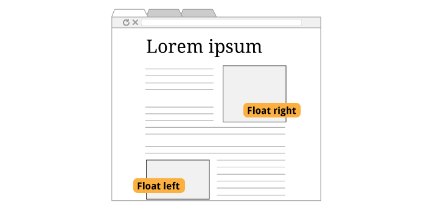

CSS layout
What is layout?
Many of you are interested in designing pages, or making your articles look better. Layout is a big part of that.
What you can do with layout
Layout on the web
Normally, elements on a page are like people standing in line at the movie theater. First come, first serve, and you're not going to just walk up next to someone -- if you get there late, you're going to the end of the line.
Introducing floats
To borrow a metaphor from the website CSS Tricks, a float is like a pull quote or photo in a magazine layout: An element that is pulled to the left or right and lets other content flow around it.
You've noticed until now that, every HTML paragraph, header, image is laid out consecutively, one on top of another. Floats let lay out content side by side.
How floats work
Normally, elements on a page are like people standing in line at the movie theater. First come, first serve, and you're not going to just walk up next to someone -- if you get there late, you're going to the end of the line.
A simple float
<img src="http://i.imgur.com/i8U98Ln.jpg">
<p>
Scientists have recently identified a shocking new truth: cats are far deadlier to wildlife than anyone realized.
</p>img {
float: left;
}Scientists have recently identified a shocking new truth: cats are far deadlier to wildlife than anyone realized.
That's all it takes. Not bad! You can also float: right.
A simple float right
<img src="http://i.imgur.com/i8U98Ln.jpg">
<p>
Scientists have recently identified a shocking new truth: cats are far deadlier to wildlife than anyone realized.
</p>img {
float: right;
}Scientists have recently identified a shocking new truth: cats are far deadlier to wildlife than anyone realized.
Like so.
Side-by-side floats
<div class="book-one">
It is a truth universally acknowledged, that a single man in possession of a good fortune must be in want of a wife.
</div>
<div class="book-two">
Happy families are all alike; every unhappy family is unhappy in its own way.
</div>.book-one {
float: left;
width: 340px;
}
.book-two {
float: left;
width: 340px;
}It is a truth universally acknowledged, that a single man in possession of a good fortune must be in want of a wife.
Happy families are all alike; every unhappy family is unhappy in its own way.
To float two columns of text, or anything else, side by side, just add a float to each one, and be sure to add a width as well.
Collapsed elements
<div class="container">
<p class="book-one">
It is a truth universally acknowledged, that a single man in possession of a good fortune must be in want of a wife.
</p>
</div><.book-one {
float: left;
width: 340px;
}
.container {
border: 1px solid #000;
padding: 10px;
}It is a truth universally acknowledged, that a single man in possession of a good fortune must be in want of a wife.
Fixing the collapse
<!-- Clearfix on parent -->
<div class="container clearfix">
<p class="book-one"> <!-- Float -->
It is a truth universally acknowledged, that a single man in possession of a good fortune must be in want of a wife.
</p>
</div>...
.clearfix:after {
content: ".";
visibility: hidden;
display: block;
height: 0;
clear: both;
}It is a truth universally acknowledged, that a single man in possession of a good fortune must be in want of a wife.
There's a technique called "clearfix" that solves this problem. It's something you can google -- say, "css tricks micro clearfix", and copy the code they provide.
You might say that it is a truth universally acknowledged, that a parent element in possession of a floated child must be in want of a clearfix.
With your mentor:
- Do exercise #8: A parade of floats
- Work on your project.